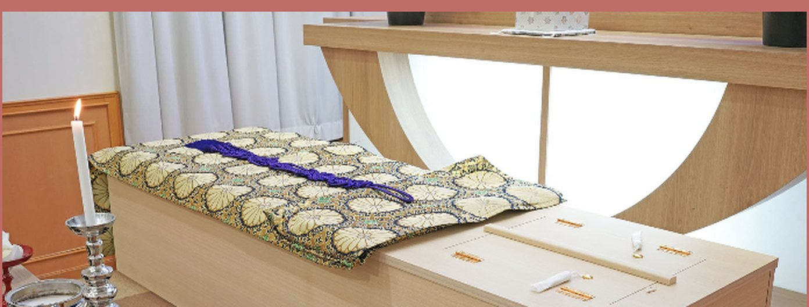
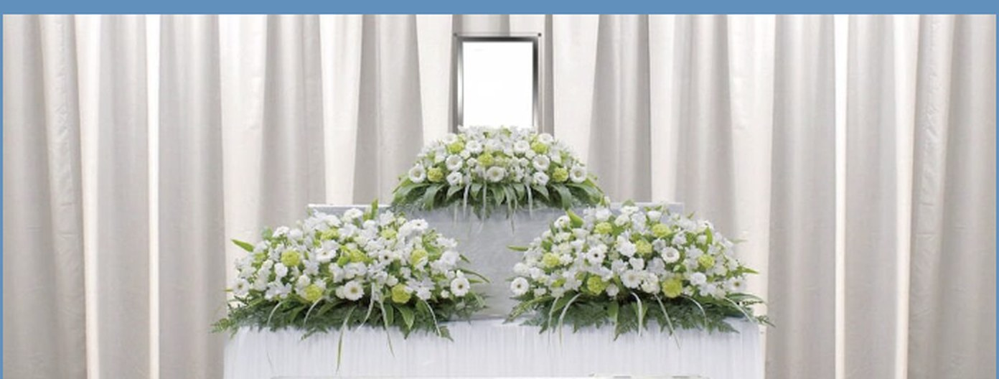
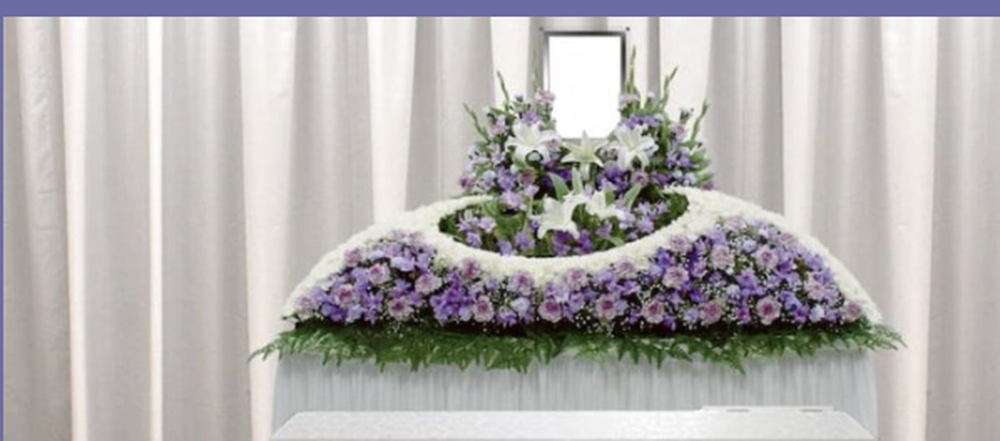
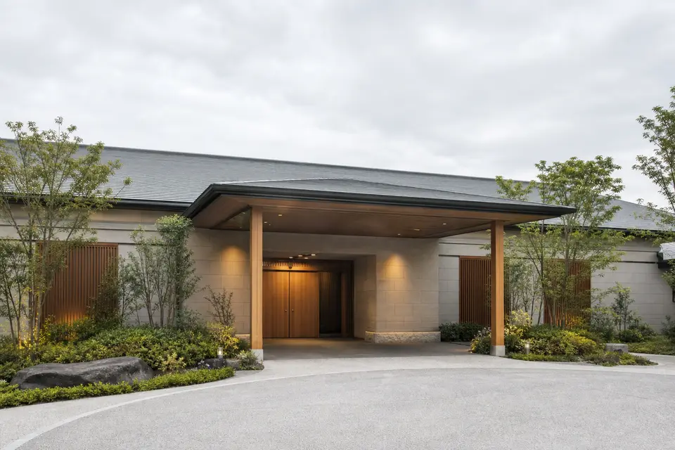
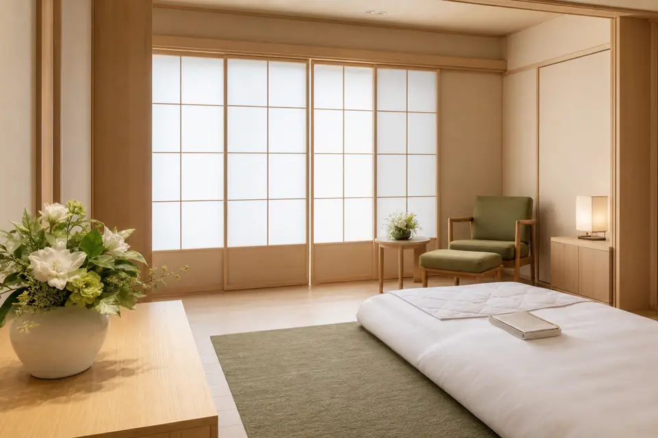
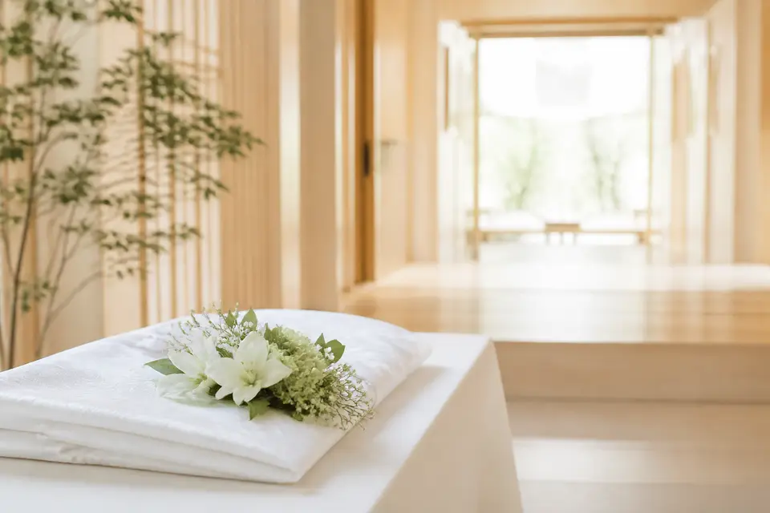

東京・川崎・横浜の
斎場選びをご案内
ご希望の地域・人数に合わせて斎場をご案内。特定の一施設だけでなく、ご事情に合うお見送りの場所を一緒に考えます。
ご案内できる斎場を見る →突然のご逝去で、お困りの方へ
東京・川崎・横浜の葬儀相談窓口
いま必要なことを、一つの窓口で。
家族葬 光
火葬式 16.5万円〜（税込）
※火葬までの日数・搬送距離などにより別途費用がかかります
家族葬 光は、何を大切にする？
お見送りの場所や方法が決まっていなくても、
ご希望とご事情をお聞かせください。
ご希望の地域・人数に合わせて斎場をご案内。特定の一施設だけでなく、ご事情に合うお見送りの場所を一緒に考えます。
ご案内できる斎場を見る →24時間365日受付。まずは現在のご状況をうかがい、ご搬送・ご安置など、必要な手配の段取りをご案内します。
ご相談後の流れを見る →基本料金だけでなく、ご安置・ドライアイスの延長や別途費用も確認。正式なお見積りは内訳を明記してご案内します。
日数を変えて試算する →＼ 日数を変えて、費用の変化を確認 ／
川崎市・横浜市では、火葬場の混み具合により数日お待ちいただくことがあります。その間のご安置とドライアイスは1日ごとに費用が発生します。ここを先にご確認ください。
たたきの試算です。延長単価・火葬料等は確認中。
ご葬儀のかたちと、お待ちいただく日数をお選びください。
初期表示の4日は計算例です。実際の待ち日数を示すものではありません。
| 基本料金 | 165,000円 |
|---|---|
| ご安置・ドライアイスの延長（3日分） | 60,000円 |
| 火葬場の使用料・火葬料 | 0円 |
1日待つごとに、ご安置とドライアイスの費用が増えます。
基本に含む1日を超える分を加算します。
基本料金 待つ日数で増える分 火葬場の料金
縦軸：総額の目安（万円）／横軸：火葬までの日数
棒は幅をかける前の計算額です。金額はたたき・要確認です。
上記は目安の金額です。実際のお費用は、搬送距離・式場の空き状況・ご希望の内容（お花・お食事・返礼品・宗教者への謝礼など）により変わります。正式なお見積りは、お電話またはフォームでのご相談時に、内訳を明記してお出しします。
※式場使用料・規定外の搬送費・深夜割増・お花・お食事・返礼品・宗教者への謝礼等は上記に含まれません。
他社のお見積りと比べるときに
基本料金だけでは、最終的なお費用は比べられません。
お手元の見積りと、次の項目を並べてご確認ください。
| 確認する項目 | 比較先のお見積りで確認 | 家族葬 光のご案内 |
|---|---|---|
| 基本料金と総額 | 税込価格か、含まれるものと別途費用が分かるか | 基本料金・別途費用を分けてご案内。正式な見積りに内訳を明記します。 |
| ご安置・ドライアイス | 何日分を含むか、延長時の1日あたりの費用はどうか | 待つ日数による増額を試算し、実際の条件は正式な見積りで確認します。 |
| 搬送 | 含まれる距離・回数、規定を超える場合の費用はどうか | 搬送距離などをうかがい、規定外の費用を含めてご案内します。 |
| 式場・火葬場の料金 | プランに含むか別途か、利用する施設と住民区分は同じか | ご希望の地域・施設に合わせて確認。式場使用料等は別途となります。 |
| その他の希望 | お花・食事・返礼品・宗教者への謝礼などを同じ条件にしているか | ご希望をうかがい、必要な内容と費用を整理します。 |
特定の他社の価格・サービスを評価した表ではありません。比較先の見積りに記載がない項目は、各窓口へご確認ください。
＼ お見送りのかたちに合わせて ／
基本料金だけでなく、別途かかるものも一緒にご確認ください。
たたき：基本料金の内訳・含まれるものは確認中です。正式なお見積りでご案内します。
基本料金と、含まれるものを確認

通夜・告別式なし、火葬のみ
基本料金16.5万円〜 （税込）

通夜なし、告別式と火葬を1日で
基本料金38.5万円〜 （税込）

通夜と告別式をご親族中心に
基本料金49.5万円〜 （税込）
○ 含まれる ／ ― 含まれない（そのかたちでは行わない）
△ 別途かかる ※式場の手配・設備と、式場の使用料は異なります。
＼ ご希望の地域から探す ／
ご希望の場所から、お見送りのかたちを考える。
地図の番号とカードから、斎場の詳細をご確認いただけます。
確認用：各施設での施行可否は確認中です。東部斎場は開設予定施設です。
地図を読み込んでいます。表示されない場合は一覧をご利用ください。
番号は一覧と対応しています。正福寺 公会堂は高津区北見方付近の目安です。
9施設（開設予定を含む）
この斎場でのお見送りをご希望の方は、0120-264-167 へご相談ください。
この斎場でのお見送りをご希望の方は、0120-264-167 へご相談ください。
この斎場でのお見送りをご希望の方は、0120-264-167 へご相談ください。
この斎場でのお見送りをご希望の方は、0120-264-167 へご相談ください。
この斎場でのお見送りをご希望の方は、0120-264-167 へご相談ください。
この斎場でのお見送りをご希望の方は、0120-264-167 へご相談ください。
この斎場でのお見送りをご希望の方は、0120-264-167 へご相談ください。
この斎場でのお見送りをご希望の方は、0120-264-167 へご相談ください。
この斎場でのお見送りをご希望の方は、0120-264-167 へご相談ください。
特定の斎場との専属提携ではなく、ご利用・お手配が可能な斎場としてご案内しています。ご希望に応じて、上記のほかの斎場・火葬場も手配いたします。
どの斎場でも、ご相談は 0120-264-167 へ。
ご希望・人数・お待ちいただく日数に合わせて、適した斎場をご案内します。
ご依頼の前に、
総額の目安を確認できます
＼ 24時間365日・通話無料 ／
ご相談・ご依頼はこちら0120-264-167まずお電話ください。ご搬送とご安置の手配を先に進め、
内容とお費用のご相談はそのあとで承ります。

2イメージ
3イメージいまどこにいらっしゃるか（病院・ご自宅・施設）だけお聞かせください。ご家族の人数やご予算が未定でも問題ありません。
寝台車で故人様をお迎えし、ご希望の場所（安置施設・ご自宅）へご搬送します。深夜・早朝も対応します。
落ち着いた場所で、プラン・日程・お見積りをご相談します。火葬場の空き状況もこの時点でお調べします。
すでに他社に搬送された後でも、ご相談は承れます。
一般的な流れです。状況により順序は変わります。ご自宅で容体が急変した場合など、生死がわからない場合は救急へ連絡し、医師等の指示に従ってください。
＼ 万が一のときも、一つずつ ／
安置施設またはご自宅へご搬送し、ドライアイスの処置を行います。
ご希望の安置場所をお聞かせください
ご葬儀のかたち・日程・火葬場の空き状況・お見積りを確定します。
内訳を明記したお見積りをご案内します
死亡届・火葬許可の申請を代行します。
必要な手続きをご案内します
ご希望の内容でお見送りいただきます。
ご希望に合わせたお見送りを

ご遺骨のお引き取り、納骨・法要のご相談も承ります。
納骨・法要のご相談も承ります
＼ ご不安なことを、ひとつずつ ／
病院から退院（ご搬送）をお願いされることはありますが、葬儀社をその場で決める必要はありません。まずお電話ください。ご搬送とご安置だけを先に進め、内容のご相談はあとで落ち着いて行えます。
お待ちいただく日数・搬送距離・火葬場の料金で変わります。上の「総額の目安」で概算をご確認いただき、お電話またはフォームで正式なお見積りをお出しします。お見積りには内訳を明記します。
24時間365日、担当者が対応します。折り返しではなく、その場でお話をうかがいます。
ご希望に応じて手配のご相談を承ります。お布施・謝礼の目安も事前にお伝えします（基本料金には含まれません）。
もちろん承ります。事前にご相談いただくと、日程・費用・必要な段取りを落ち着いてご準備いただけます。無料です。下のフォームからもお申し込みいただけます。
株式会社ランバードが運営する葬儀相談窓口です。ご葬儀の施行は提携葬儀社が行います。詳しくはページ下部の運営者情報をご覧ください。
＼ 事前のご相談・資料のご請求 ／
お急ぎでない方は、フォームからもご相談を承ります（無料）。内容を確認してご連絡します。お急ぎの場合はお電話ください。
お急ぎの方はお電話ください
通話無料・24時間365日0120-264-167ローカル確認版：本番の公開フォームと同じ項目を表示しています。入力内容は送信・保存されません。
＼ 窓口と施行の役割 ／
運営：株式会社ランバード
神奈川県川崎市高津区
ご紹介にあたり、ご遺族に対して通常のお費用に上乗せしてご請求することはありません。
| 窓口の運営 | 株式会社ランバード |
|---|---|
| ご葬儀の施行 | 株式会社True Heart |
| 窓口電話 | 0120-264-167 通話無料・24時間365日 |
| ご紹介について | ご紹介にあたり、ご遺族に対して通常のお費用に上乗せしてご請求することはありません。 |